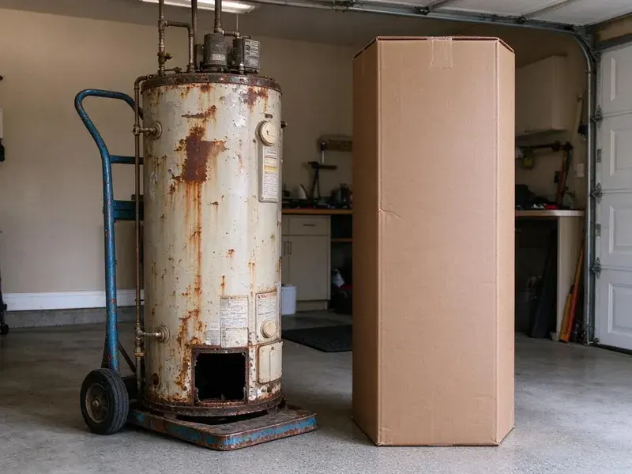

Plumbing Replacement in North Lakes, AK
Dealing with persistent plumbing issues in your North Lakes, AK home? Our team focuses on complete plumbing replacement, so your system works the way it should.
- Same-Day Water Heater Swaps
- Warrantied Work
- Prompt, Expert Technicians
- Guaranteed Work
Get Reliable Replacements That Last for Years in North Lakes, AK.
Our experienced technicians are ready to provide durable, code-compliant plumbing solutions for your property.
Your First Call for Plumbing Replacement in North Lakes, AK
CKN Plumbing sees how quickly hard water, heat and shifting soil can wear out plumbing. Some rural households in Alaska use hauled water and storage tanks, which brings its own plumbing and freeze protection needs. Water heaters scale up, softeners lose resin, well pumps burn out and old pipes corrode. We replace these components with quality equipment sized for your home and explain the typical lifespan of each.
Our expertise includes:
- Well pump, pressure tank and water softener replacements
- Durable Sewer Line Installations
- Sewer, water and gas line replacements

Additional Plumbing Replacement Services in North Lakes, AK
When repairs are no longer enough, our replacement services in North Lakes, AK deliver durable upgrades that restore full performance.


Customers
Why Choose CKN Plumbing for Plumbing Replacement in North Lakes, AK?
Choosing CKN Plumbing for your plumbing replacement means opting for a company that values your home's long-term health and your peace of mind. We are committed to delivering exceptional service and lasting results.
- Local Expertise, We understand the plumbing challenges posed by Alaska soil conditions and climate, delivering tailored solutions.
- Honest Advice, We tell you when a repair makes more sense than replacement.
- Local Knowledge, We know North Lakes's plumbing codes and common issues, delivering compliant and effective replacements.
Citywide Coverage
CKN Plumbing serves every neighborhood and surrounding community of North Lakes for plumbing replacement. No matter where you are located within the North Lakes area, our experienced plumbers are ready to provide prompt and professional service.
Experienced Team
Our team of plumbers at CKN Plumbing has deep experience with all types of plumbing replacement projects. They are regularly trained on new technologies and best practices, keeping workmanship to a high standard every time.
Safety-First Approach
Permits and inspections are handled when required, especially for water heaters, water lines and sewer replacements. We also install required safety devices like expansion tanks, relief valve drains and 18 inch garage stands where code calls for them.
Trusted Certified North Lakes Plumbing Services Professionals
At CKN Plumbing, we take pride in providing certified plumbing services throughout North Lakes, AK. Backed by leading industry credentials, our experienced plumbers combine technical skill with genuine customer care. Whether it is repair, installation, or maintenance, we follow strict safety and quality standards to deliver long-lasting results you can trust.
Call Us Now PHCC Plumbing Contractor Recognition
PHCC Plumbing Contractor Recognition Better Business Bureau (BBB) Accreditation
Better Business Bureau (BBB) Accreditation Angi Certified Pro
Angi Certified Pro ISO 9001 Quality Management Certification
ISO 9001 Quality Management CertificationTrusted Plumbing Replacement Work in North Lakes, AK
Well Pump & Pressure Tank Replacement in North Lakes
For rural properties in and around North Lakes that rely on well water, a failing well pump or pressure tank can leave you with no water at all. We diagnose issues with your current well system and provide professional replacement for submersible or jet pumps. We also replace faulty pressure tanks, so your well system maintains consistent water pressure and your pump lasts longer. Proper sizing and installation are essential for efficient operation and a reliable water supply.

Pipe Replacement and Repiping in North Lakes
Corroded, leaking or galvanized pipes can contaminate your water and cause expensive damage. CKN Plumbing offers full pipe replacement, or repiping, for homes in North Lakes. We replace old plumbing with new PEX or copper, improving water quality and pressure throughout your entire home. This is a crucial upgrade for many older homes.
Repair vs Replacement Cost Comparison in North Lakes, AK
A common rule of thumb is to replace when a repair costs more than half the price of new equipment or when the item is near the end of its expected life. Replacement also makes sense when repeated repairs are adding up. We give you side-by-side pricing for repair and replacement so you can decide with real numbers. Many replacements also improve efficiency and lower future repair costs.
Water Heater Replacement in North Lakes
When your water heater is leaking, not heating or providing too little hot water, it is often more economical to replace it than to repair it, especially if it is over 10 years old. We install standard tank water heaters, sized properly for your home's needs and compliant with current energy efficiency standards. Our team handles the safe removal of your old unit and the careful installation of your new one, connecting gas or electric lines and confirming correct venting and pressure relief valve operation for performance and safety.
Whole-Home Pipe Replacement in North Lakes
Homes with multiple pinhole leaks, galvanized pipe or polybutylene may benefit from a complete repipe. We replace supply lines with PEX or copper, often rerouting through the attic to avoid future slab leaks. Most repipes take two to four days with water restored each evening whenever we can. Drywall openings are patched when the work is finished.
Sewer Line Replacement in North Lakes
Persistent sewer backups, foul odors or lush spots in your yard can signal a failing sewer line. Frost heave is a major concern in Alaska, as freezing ground can lift and shift foundations, buried lines, and septic components. We offer comprehensive sewer line replacement using trenchless technology whenever possible, limiting disruption to your landscaping. For more severe damage, traditional excavation is performed with careful attention. We make sure new lines are properly graded, connected and compliant with local North Lakes plumbing codes, preventing future blockages and costly repairs.
Pipe Replacement & Whole-Home Repiping in North Lakes, AK
Homes in North Lakes, AK with older galvanized steel or polybutylene pipes often deal with low water pressure, discolored water or frequent leaks. A whole-home repipe with new PEX or copper piping can greatly improve water quality and pressure and eliminate leak concerns. We carefully plan and complete repiping projects, minimizing disruption and making sure all new pipes are properly routed, insulated and connected, providing a durable and efficient plumbing system for decades to come.

Water Line Replacement in North Lakes, AK
A leaking main water line can lead to major water loss, high bills and foundation damage, which is a serious concern for homes on slab foundations. Our water line replacement services address issues like corroded pipes, leaks or low water pressure. We locate the leak, excavate the area if necessary and replace the damaged section or the entire line with durable PEX or copper piping. We make sure of a secure, leak-free connection from the meter to your home, restoring reliable water flow.
Nearby Plumbing Replacement in North Lakes, AK
When you need dependable plumbing replacement services near me in North Lakes, AK, CKN Plumbing is your local expert. We know the local plumbing infrastructure and its challenges closely, which lets us provide effective and tailored solutions.
Our team is always ready to respond quickly to your plumbing replacement needs, so residents throughout North Lakes have access to professional and timely service. We take pride in being the go-to local choice for major plumbing upgrades and repairs.
CKN Plumbing at a Glance
- Licensed and insured plumbers serving North Lakes, AK
- 24/7 emergency service with same-day scheduling
- Clear written estimates, no hidden fees
- 4.9-star rated by 309+ Alaska customers
North Lakes Map
North Lakes Information
- Population
- 9,450
- Area codes
- Local
- Service area
- North Lakes and communities within 40 miles
- Nearby
- South Lakes, Gateway, Tanaina, Wasilla
Effective plumbing replacement matters for homes in North Lakes, AK, since shifting soil can move buried pipes and freezing weather can stress water lines over time.
Expert Services
Trust our professionals for reliable CKN Plumbing solutions in North Lakes, AK.
Our Specialized Plumbing Services in North Lakes, AK
At CKN Plumbing, we provide a complete range of plumbing services across North Lakes, AK. From leak detection to full system installations, our team ensures fast, precise, and affordable service for both residential and commercial properties. Explore our core services below:


How Our Plumbing Upgrade Process Works in North Lakes, AK
Our plumbing replacement process is designed for efficiency and transparency, so you understand every step of the project.
Request a Quote
Start by calling us at (928) 470-9007 or filling out our online form to schedule an initial consultation. We will discuss your plumbing issues and replacement needs.
On-Site Assessment
A certified plumber will visit your North Lakes property to carefully assess your plumbing system, diagnose the problem and recommend the best replacement options.
Detailed Proposal
You will receive a clear, upfront estimate outlining the scope of work, materials, timeline and all associated costs for your plumbing replacement project.
Frequently Asked Questions About Plumbing Replacement in North Lakes
Costs vary by job. A tank water heater replacement usually runs $1,400 to $3,000, a water softener $1,500 to $3,500, a water line $1,800 to $5,500 and a sewer line $4,000 to $15,000 or more.
Replacing old pipes with PEX or copper offers numerous benefits. PEX is flexible, corrosion-resistant and less prone to bursting in freezes, while copper is durable and long-lasting. Both improve water quality, eliminate leaks from old pipes and can noticeably boost water pressure and flow throughout your North Lakes home.
Yes, for critical issues like burst pipes or non-functional water heaters, CKN Plumbing offers emergency plumbing replacement. We understand that some plumbing failures cannot wait, and we prioritize urgent situations to restore safety and function to your North Lakes home.
While small fixes might be possible, major plumbing replacements like water heaters, sewer lines or full repipes are complex and best left to licensed professionals. Improper installation can lead to leaks, code violations, safety hazards and costly damage to your North Lakes home. It is usually not worth the risk.
While some minor plumbing repairs can be DIY, major replacements like water heaters, sewer lines or repiping should always be handled by licensed professionals. These jobs involve complex systems, potential safety hazards (gas, high water pressure) and strict code compliance. Improper installation can lead to leaks, damage and even severe safety risks, costing more in the long run.
Yes, CKN Plumbing understands that some plumbing failures, like a burst main water line or a severely leaking water heater, are emergencies. We offer emergency plumbing replacement to address critical issues quickly and minimize damage to your North Lakes property. Call our emergency line for immediate assistance.
Many sewer line replacements take one to three days depending on length, depth and method. Trenchless options can shorten the timeline.
Consider the age of the equipment, the cost of repair compared with replacement and how often it has needed service. We give you both options with pricing so you can choose.
What People Are Saying About Our Plumbing Experts?

Laura S.
I scheduled a water heater replacement, and the team made the process smooth and affordable. The new unit works perfectly, and they cleaned up after completing the job.
Water Heater Replacement · Wasilla, AKSofia M.
Two new toilets installed in one visit, no mess left behind, and the tech even adjusted a faucet he noticed was dripping. Fair pricing and really friendly.
Toilet Installation · Wasilla, AK
Daniel K.
A pipe burst at 11 pm and they actually answered. The plumber showed up within the hour, shut everything down, and had us back to normal the next morning. Could not ask for more.
Emergency Plumbing · North Lakes, AK
Patricia H.
We had a slab leak that two other companies could not find. CKN Plumbing located it in under an hour, explained our options, and the price matched the quote to the dollar.
Slab Leak Repair · Fishhook, AK
Robert G.
The trenchless sewer replacement saved our front yard. They walked us through the camera inspection footage first so we knew exactly what we were paying for.
Sewer Line Replacement · South Lakes, AK
Mark T.
When our office needed drain cleaning, CKN Plumbing provided quick, reliable service. The plumber arrived on time and made sure every drain flowed perfectly before leaving. Very satisfied.
Drain Cleaning · Palmer, AK